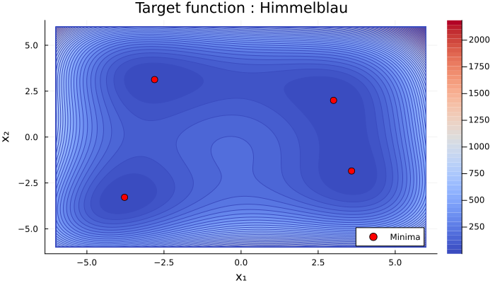
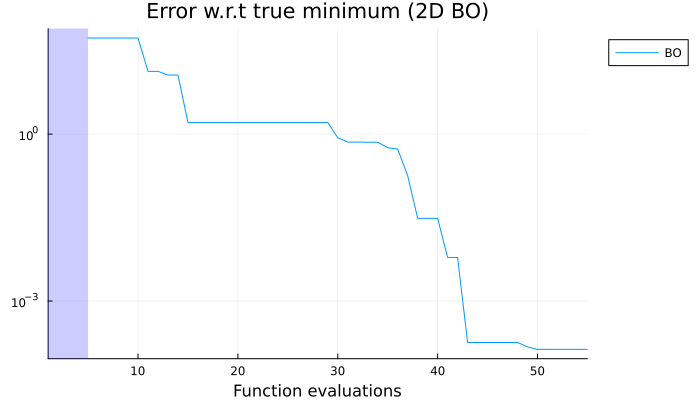
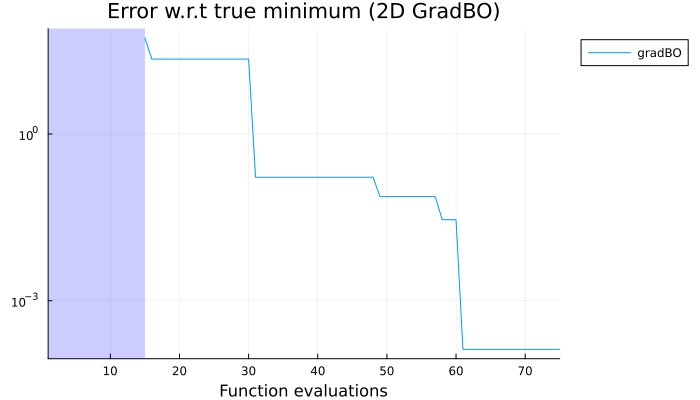
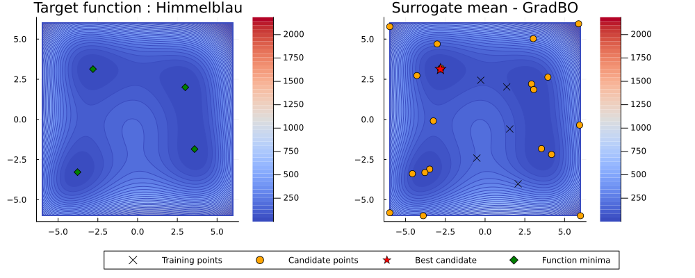

AbstractBayesOpt Tutorial: Basic 2D Optimisation
Setup
Loading the necessary packages.
using AbstractBayesOpt
using AbstractGPs
using ForwardDiff
using PlotsDefine the objective function
f(x) = (x[1]^2 + x[2] - 11)^2 + (x[1]+x[2]^2-7)^2
d = 2
domain = ContinuousDomain([-6.0, -6.0], [6.0, 6.0])4-element Vector{Vector{Float64}}:
[3.0, 2.0]
[-2.805118, 3.131312]
[-3.77931, -3.283186]
[3.584428, -1.848126]Scatter them on the contour plot
Standard GPs
We'll use a standard Gaussian Process surrogate with a squared-exponential kernel. We add a small jitter term for numerical stability of $10^{-9}$.
noise_var = 1e-9
surrogate = StandardGP(SqExponentialKernel(), noise_var)StandardGP{Float64}(AbstractGPs.GP{AbstractGPs.ZeroMean{Float64}, KernelFunctions.ScaledKernel{KernelFunctions.TransformedKernel{KernelFunctions.SqExponentialKernel{Distances.Euclidean}, KernelFunctions.ScaleTransform{Float64}}, Float64}}(AbstractGPs.ZeroMean{Float64}(), Squared Exponential Kernel (metric = Distances.Euclidean(0.0))
- Scale Transform (s = 1.0)
- σ² = 1.0), 1.0e-9, nothing)Generate uniform random samples x_train
n_train = 5
x_train = [domain.lower .+ (domain.upper .- domain.lower) .* rand(d) for _ in 1:n_train]
y_train = f.(x_train)5-element Vector{Float64}:
110.33292690679502
73.82945209082831
238.53003395234026
53.19981955218784
175.66046578818757Choose an acquisition function
We'll use the Expected Improvement acquisition function with an exploration parameter ξ = 0.0.
ξ = 0.0
acq = ExpectedImprovement(ξ, minimum(y_train))ExpectedImprovement{Float64}(0.0, 53.19981955218784)Set up the Bayesian Optimisation structure
We use BOStruct to bundle all components needed for the optimization. Here, we set the number of iterations to 5 and the actual noise level to 0.0 (since our function is noiseless). We then run the optimize function to perform the Bayesian Optimisation.
bo_struct = BOStruct(
f,
acq,
surrogate,
domain,
x_train,
y_train,
50, # number of iterations
0.0, # Actual noise level (0.0 for noiseless)
)
@info "Starting Bayesian Optimisation..."
result, acq_list, standard_params = AbstractBayesOpt.optimize(
bo_struct; standardize="mean_only"
);[ Info: Starting Bayesian Optimisation...
[ Info: Standardization choice: mean_only
[ Info: Standardization parameters: μ=130.3105396580678, σ=1.0
[ Info: Optimizing GP hyperparameters at iteration 1...
[ Info: New parameters: ℓ=[4.330178382332697], variance =[7070.708091406502]
[ Info: Iteration #1, current min val: 53.19981955218784
[ Info: Acquisition optimized, new candidate point: [5.115857349690238, 3.2143238352852617]
[ Info: Iteration #2, current min val: 53.19981955218784
[ Info: Acquisition optimized, new candidate point: [0.8454242513488622, 1.9173483913433178]
[ Info: Iteration #3, current min val: 53.19981955218784
[ Info: Acquisition optimized, new candidate point: [-1.3377543368274043, 5.9999999999999964]
[ Info: Iteration #4, current min val: 53.19981955218784
[ Info: Acquisition optimized, new candidate point: [-5.999999999999994, 0.7512334785730191]
[ Info: Iteration #5, current min val: 53.19981955218784
[ Info: Acquisition optimized, new candidate point: [4.613860286738636, -0.916885319613268]
[ Info: Iteration #6, current min val: 53.19981955218784
[ Info: Acquisition optimized, new candidate point: [3.33563780213767, -0.064094679732124]
[ Info: Iteration #7, current min val: 13.40135172783388
[ Info: Acquisition optimized, new candidate point: [-3.037447723236074, -5.999999999999941]
[ Info: Iteration #8, current min val: 13.40135172783388
[ Info: Acquisition optimized, new candidate point: [3.335181172879631, 0.5905644503625699]
[ Info: Iteration #9, current min val: 11.50599690835276
[ Info: Acquisition optimized, new candidate point: [3.3582801849695767, 0.4216608389845805]
[ Info: Iteration #10, current min val: 11.50599690835276
[ Info: Acquisition optimized, new candidate point: [2.874086121908877, 1.8059283785043398]
[ Info: Optimizing GP hyperparameters at iteration 11...
[ Info: New parameters: ℓ=[2.8887739206546295], variance =[197318.5156408755]
[ Info: Iteration #11, current min val: 1.6192202636044433
[ Info: Acquisition optimized, new candidate point: [5.999999999999971, -5.9999999999374145]
[ Info: Iteration #12, current min val: 1.6192202636044433
[ Info: Acquisition optimized, new candidate point: [-5.999999999981909, 5.99999999999993]
[ Info: Iteration #13, current min val: 1.6192202636044433
[ Info: Acquisition optimized, new candidate point: [-2.2623219983762812, 0.6775354325972079]
[ Info: Iteration #14, current min val: 1.6192202636044433
[ Info: Acquisition optimized, new candidate point: [-5.9999999999999165, -3.768508095121548]
[ Info: Iteration #15, current min val: 1.6192202636044433
[ Info: Acquisition optimized, new candidate point: [2.8211271533321747, 5.999999999999715]
[ Info: Iteration #16, current min val: 1.6192202636044433
[ Info: Acquisition optimized, new candidate point: [2.246500430370196, -2.0873687363460527]
[ Info: Iteration #17, current min val: 1.6192202636044433
[ Info: Acquisition optimized, new candidate point: [-2.094950171392213, 2.2718411157819673]
[ Info: Iteration #18, current min val: 1.6192202636044433
[ Info: Acquisition optimized, new candidate point: [2.7739751750422807, 1.5571371605710163]
[ Info: Iteration #19, current min val: 1.6192202636044433
[ Info: Acquisition optimized, new candidate point: [0.35369242360382885, -5.9999999999999964]
[ Info: Iteration #20, current min val: 1.6192202636044433
[ Info: Acquisition optimized, new candidate point: [-5.999999999962091, -5.999999999999967]
[ Info: Optimizing GP hyperparameters at iteration 21...
[ Info: New parameters: ℓ=[3.417413269684889], variance =[999999.9999998894]
[ Info: Iteration #21, current min val: 1.6192202636044433
[ Info: Acquisition optimized, new candidate point: [-3.3588894380061074, -2.926478540721302]
[ Info: Iteration #22, current min val: 1.6192202636044433
[ Info: Acquisition optimized, new candidate point: [3.4358259063316337, -2.2369782540989007]
[ Info: Iteration #23, current min val: 1.6192202636044433
[ Info: Acquisition optimized, new candidate point: [-2.8043191653290735, -2.252846393488577]
[ Info: Iteration #24, current min val: 1.6192202636044433
[ Info: Acquisition optimized, new candidate point: [-3.2072064238729103, -3.4127141410596344]
[ Info: Iteration #25, current min val: 1.6192202636044433
[ Info: Acquisition optimized, new candidate point: [3.466806721502037, -1.7055655792079676]
[ Info: Iteration #26, current min val: 0.8613919729281712
[ Info: Acquisition optimized, new candidate point: [-3.7743129176109567, -3.4069129276950583]
[ Info: Iteration #27, current min val: 0.7195346887105153
[ Info: Acquisition optimized, new candidate point: [-3.4971852727887724, 2.5844786720227355]
[ Info: Iteration #28, current min val: 0.7195346887105153
[ Info: Acquisition optimized, new candidate point: [-3.6839655270062366, -3.326398089444027]
[ Info: Iteration #29, current min val: 0.7148466785557043
[ Info: Acquisition optimized, new candidate point: [-3.331127213490808, 1.8804982534986527]
[ Info: Iteration #30, current min val: 0.7148466785557043
[ Info: Acquisition optimized, new candidate point: [-2.7143871774417576, 3.2161118018243062]
[ Info: Optimizing GP hyperparameters at iteration 31...
[ Info: New parameters: ℓ=[3.2239359678416957], variance =[999999.9999999285]
[ Info: Iteration #31, current min val: 0.5686738879455403
[ Info: Acquisition optimized, new candidate point: [-2.764607352238259, 3.0187342838756357]
[ Info: Iteration #32, current min val: 0.5392965953276115
[ Info: Acquisition optimized, new candidate point: [-2.7313795459319286, 3.116575182736692]
[ Info: Iteration #33, current min val: 0.1792573490917382
[ Info: Acquisition optimized, new candidate point: [-2.833322374685529, 3.1424717604657295]
[ Info: Iteration #34, current min val: 0.030711538813966176
[ Info: Acquisition optimized, new candidate point: [2.8618363615305973, 2.222960578456686]
[ Info: Iteration #35, current min val: 0.030711538813966176
[ Info: Acquisition optimized, new candidate point: [3.634713848324408, -1.896504752435637]
[ Info: Iteration #36, current min val: 0.030711538813966176
[ Info: Acquisition optimized, new candidate point: [3.576606858475506, -1.860373333118813]
[ Info: Iteration #37, current min val: 0.006072422829156562
[ Info: Acquisition optimized, new candidate point: [5.9999999999999964, 5.999999999999011]
[ Info: Iteration #38, current min val: 0.006072422829156562
[ Info: Acquisition optimized, new candidate point: [-2.803564759583061, 3.129694646596291]
[ Info: Iteration #39, current min val: 0.00018025957965345105
[ Info: Acquisition optimized, new candidate point: [3.0084309917257133, 2.002337920581494]
[ Info: Iteration #40, current min val: 0.00018025957965345105
[ Info: Acquisition optimized, new candidate point: [-3.7928657732673914, -3.2743979733663946]
[ Info: Optimizing GP hyperparameters at iteration 41...
[ Info: New parameters: ℓ=[3.1701640294034217], variance =[999999.9999999604]
[ Info: Iteration #41, current min val: 0.00018025957965345105
[ Info: Acquisition optimized, new candidate point: [-3.785865029713141, -3.296193627741501]
[ Info: Iteration #42, current min val: 0.00018025957965345105
[ Info: Acquisition optimized, new candidate point: [3.5782109636699, -1.8927539809662046]
[ Info: Iteration #43, current min val: 0.00018025957965345105
[ Info: Acquisition optimized, new candidate point: [3.431526092087713, -5.999999999999997]
[ Info: Iteration #44, current min val: 0.00018025957965345105
[ Info: Acquisition optimized, new candidate point: [-3.777771180497889, -3.2819674021228207]
[ Info: Iteration #45, current min val: 0.00015016268180897095
[ Info: Acquisition optimized, new candidate point: [2.9993295833047315, 1.9977206211449585]
[ Info: Iteration #46, current min val: 0.00013540994895899989
[ Info: Acquisition optimized, new candidate point: [-3.7805999999999997, 5.9718]
[ Info: Iteration #47, current min val: 0.00013540994895899989
[ Info: Acquisition optimized, new candidate point: [5.9514, -3.2502]
[ Info: Iteration #48, current min val: 0.00013540994895899989
[ Info: Acquisition optimized, new candidate point: [0.8981999999999992, 4.173]
[ Info: Iteration #49, current min val: 0.00013540994895899989
[ Info: Acquisition optimized, new candidate point: [-5.9898, 3.551400000000001]
[ Info: Iteration #50, current min val: 0.00013540994895899989
[ Info: Acquisition optimized, new candidate point: [5.9826000000000015, 1.7682000000000002]Results
The optimization result is stored in result. We can print the best found input and its corresponding function value.
Optimal point: [2.9993295833047315, 1.9977206211449585]
Optimal value: 0.00013540994895899989Plotting of running minimum over iterations
The running minimum is the best function value found up to each iteration.
Gradient-enhanced GPs
Now, let's see how to use gradient information to improve the optimization. We'll use the same function but now also provide its gradient. We define a new surrogate model that can handle gradient information, specifically a GradientGP.
grad_surrogate = GradientGP(SqExponentialKernel(), d + 1, noise_var)
ξ = 0.0
acq = ExpectedImprovement(ξ, minimum(y_train))
∇f(x) = ForwardDiff.gradient(f, x)
f_val_grad(x) = [f(x); ∇f(x)];Generate value and gradients at random samples
y_train_grad = f_val_grad.(x_train)5-element Vector{Vector{Float64}}:
[110.33292690679502, -67.222233853589, -6.233898817174085]
[73.82945209082831, 6.547041429739899, -29.940074643607936]
[238.53003395234026, -66.57395175082759, -200.2478970556137]
[53.19981955218784, -41.927777146518736, -26.836469804291816]
[175.66046578818757, 23.666930366717853, -9.728624459781422]Set up the Bayesian Optimisation structure
bo_struct_grad = BOStruct(
f_val_grad,
acq,
grad_surrogate,
domain,
x_train,
y_train_grad,
20, # number of iterations
0.0, # Actual noise level (0.0 for noiseless)
)
result_grad, acq_list_grad, standard_params_grad = AbstractBayesOpt.optimize(bo_struct_grad);[ Info: Starting Bayesian Optimisation...
[ Info: Standardization choice: mean_scale
[ Info: Standardization parameters: μ=[130.3105396580678, 0.0, 0.0], σ=[76.32718415574614, 76.32718415574614, 76.32718415574614]
[ Info: Optimizing GP hyperparameters at iteration 1...
[ Info: New parameters: ℓ=[2.3127458100313087], variance =[5.347060062551795]
[ Info: Iteration #1, current min val: 53.19981955218784
[ Info: Acquisition optimized, new candidate point: [4.180763947347811, -2.18297607867629]
[ Info: Iteration #2, current min val: 22.24148706077502
[ Info: Acquisition optimized, new candidate point: [3.0321159400830435, 5.027403651729185]
[ Info: Iteration #3, current min val: 22.24148706077502
[ Info: Acquisition optimized, new candidate point: [3.952569117161813, 2.6295498379454236]
[ Info: Iteration #4, current min val: 22.24148706077502
[ Info: Acquisition optimized, new candidate point: [-3.0136772230474156, 4.696040621316438]
[ Info: Iteration #5, current min val: 22.24148706077502
[ Info: Acquisition optimized, new candidate point: [-4.288618644996721, 2.7295848023880347]
[ Info: Iteration #6, current min val: 22.24148706077502
[ Info: Acquisition optimized, new candidate point: [-2.7715870914400544, 3.187143256740943]
[ Info: Iteration #7, current min val: 0.16642726522951246
[ Info: Acquisition optimized, new candidate point: [-3.2548252147769885, -0.09378972293682306]
[ Info: Iteration #8, current min val: 0.16642726522951246
[ Info: Acquisition optimized, new candidate point: [-4.573327609477494, -3.3787865726850246]
[ Info: Iteration #9, current min val: 0.16642726522951246
[ Info: Acquisition optimized, new candidate point: [-3.4846474150723896, -3.0977908123721045]
[ Info: Iteration #10, current min val: 0.16642726522951246
[ Info: Acquisition optimized, new candidate point: [-3.8904229305970457, -5.999999999999785]
[ Info: Optimizing GP hyperparameters at iteration 11...
[ Info: New parameters: ℓ=[3.2704286782642256], variance =[171.64909516678796]
[ Info: Iteration #11, current min val: 0.16642726522951246
[ Info: Acquisition optimized, new candidate point: [5.999999999988527, -5.999999999998466]
[ Info: Iteration #12, current min val: 0.16642726522951246
[ Info: Acquisition optimized, new candidate point: [3.5476255284855003, -1.8199798983905824]
[ Info: Iteration #13, current min val: 0.07452530039261093
[ Info: Acquisition optimized, new candidate point: [2.919376741460712, 2.208710930621303]
[ Info: Iteration #14, current min val: 0.07452530039261093
[ Info: Acquisition optimized, new candidate point: [3.057643940492793, 1.8574906462990117]
[ Info: Iteration #15, current min val: 0.07452530039261093
[ Info: Acquisition optimized, new candidate point: [-3.786048916481933, -3.309606961032296]
[ Info: Iteration #16, current min val: 0.028642440722887224
[ Info: Acquisition optimized, new candidate point: [-2.8065115961096634, 3.13001641812601]
[ Info: Iteration #17, current min val: 0.00013297703513605338
[ Info: Acquisition optimized, new candidate point: [-5.9958, 5.776200000000001]
[ Info: Iteration #18, current min val: 0.00013297703513605338
[ Info: Acquisition optimized, new candidate point: [-5.9946, -5.8122]
[ Info: Iteration #19, current min val: 0.00013297703513605338
[ Info: Acquisition optimized, new candidate point: [5.9466, -0.3533999999999997]
[ Info: Iteration #20, current min val: 0.00013297703513605338
[ Info: Acquisition optimized, new candidate point: [5.8842, 5.953800000000001]Results
The optimization result is stored in result_grad. We can print the best found input and its corresponding function value.
Optimal point (GradBO): [-2.8065115961096634, 3.13001641812601]
Optimal value (GradBO): 0.00013297703513605338Plotting of running minimum over iterations
The running minimum is the best function value found up to each iteration. Since each evaluation provides both a function value and a 2D gradient, we duplicate the running minimum values 3x to reflect the number of function evaluations.
We observe that the gradient information does not necessarily lead to a better optimisation path in terms of function evaluations.
Plotting the surrogate model
We can visualize the surrogate model's mean and uncertainty along with the true function and the evaluated
This page was generated using Literate.jl.